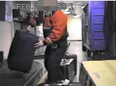
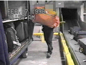

SIC 4583 - Transportation By Air
AIRLINE SERVICE COMPANY
Potential Hazards and Possible Solutions
Loading Carts from Conveyors
- Employees have no indication of luggage weight and the corresponding hazard it presents prior to actually lifting it. The unexpected nature of sudden loading especially in situations such as those seen when loading carts from conveyors at arriving planes greatly increases the risk of development of low back injuries. Without some sort of visual indicator which alerts employees to the hazard that an individual piece of luggage poses, employees may attempt to handle a load while in a very weak body posture or handle a load with a single employee when two persons be more appropriate.
| Bags over about 40 pounds should be tagged with an easily identifiable marker to alert employees of the increased risk presented by handling this item. |
- The presence of yellow guard pipes around the edge of the terminal conveyor area forces employees to reach an additional 7 to 10 inches when performing lifts to and from conveyor belts. Increasing the distance that employees must reach by as much as 10 inches, when moving items to the conveyor, can increase the risk of injury by as much as 30% This problem appears to be of more concern when carts are being unloaded rather than when the carts are being loaded. During loading sessions the handle of the suitcase is presented toward the employee which reduces the distance which must be reached. After the handle is secured the bag can be then be pulled toward the employee for improved access prior to actually lifting the full load. This keeps the load in close to the torso when supporting it's full weight. During cart unloading the bag must be swung out, or placed, toward the center of the conveyor for proper final positioning. This forces the employee to propel the bag toward the center of the conveyor if there is a handle on the bag or to reach out to the middle of the conveyor to place the item if there is no handle. The difficulty of both of these motions is increased when the distance from the employee to the load is increased by the presence of impediments to proper access. Increasing this distance increases the risk of development of MSDs of the shoulder and low back.
| Yellow protection rails should either be modified or removed to provide better access by the employees to the conveyor. |
- Manpower seems to often be inappropriately distributed to minimize injury due to lifting. It was observed that there were up to four employees at a station such as loading carts at the terminal where the pace was relatively slow and the resultant frequency of lifts was about 1 lift per minute. At other stations such as unloading the cart at the plane or unloading the cart at the terminal where there was an increased urgency, there were only 2 employees which resulted in a frequency of lifting of about 5 to 7 lifts per minute. Since the frequency of a lifting task has a direct relationship on the hazard of the task, increasing the frequency by under staffing increases the risk of injury to the musculoskeletal system caused by lifting.
| Increase staff at high demand work areas to minimize the frequency of lifting. |
- Luggage weighing in excess of 50 pounds often must be handled with the
elbow abducted out and away from the torso. This is a very weak position
for lifting which forces the shoulder to support most of the weight of the
load. There are several operations where this work orientation is used.
- The
conveyor used at the plane does not have a sufficiently steep angle so
suitcases can be placed on it without utilizing abducted arm
positions. The lack of angle produces an effective loading height of
about 32 inches which is too high when handling suitcases in the
normal manner. Loading a suitcase which has a handle drops the ideal
loading height down to about 18 inches since the bottom of the
suitcase is generally at least 12 to 24 inches below the hand. To
place the suitcase on the observed conveyor the employee must lift the
load up to at least shoulder height using primarily shoulder force.
- Luggage often has to be positioned on the carts based on the
destination of the flight. This sometimes requires that heavy
suitcases are loaded onto the top shelf since the horizontal shelf
becomes a defacto divider.
This forces employees to lift the load up to or above shoulder height
so it can be placed on the upper shelf which is located about 50
inches above the ground.
- Lifting luggage up to the plane's storage compartments without the
aid of a conveyor uses the same motions described in the previous two
paragraphs and again is a stressful motion and position for the
shoulder. Lifting a suitcase which can weigh up to 50 pounds, with the
elbow raised nearly to shoulder height using primarily one arm places
a severe strain on the shoulder and increases the risk of development
of injuries such as bursitis, tendinitis, and rotator cuff injuries.
- The
conveyor used at the plane does not have a sufficiently steep angle so
suitcases can be placed on it without utilizing abducted arm
positions. The lack of angle produces an effective loading height of
about 32 inches which is too high when handling suitcases in the
normal manner. Loading a suitcase which has a handle drops the ideal
loading height down to about 18 inches since the bottom of the
suitcase is generally at least 12 to 24 inches below the hand. To
place the suitcase on the observed conveyor the employee must lift the
load up to at least shoulder height using primarily shoulder force.
|
- Employees who must lift and place luggage while inside the plane's storage area must lift while in extremely awkward postures. The amount of torso flexion can be severe due to the low overhead clearance. Bending the torso moves the load away from the body which increase the stress to the low back. Additionally, employees must reach to place luggage into tight and inaccessible areas of the storage compartment. Reaching with a load in the hand also moves the load away from the body and increases the hazard of the lift. Moving loads in the weight range observed during the inspection under the lifting conditions which seem to be prevalent in the cargo holds, for prolonged periods of time increase the risk of development of low back injury.
| Increase staff at high demand work areas to minimize the frequency of lifting. |
-
Finally, employees spend most of their time in the plane cargo areas on their knees. Kneeling repeatedly or for long periods of time creates contact trauma to the knees which increases the risk of development of MSDs such as bursitis.
|
Rotate employees through the in-the-plane loading job to minimize the amount of time that any one employee spends in a kneeling posture. |
|
General Solutions for All Hazards Listed Above Training and Education for exposed employees, including methods to evaluate the effectiveness of the training. Re-training should be done annually, or as operations change. Training should address hazards associated with the job, the risks of performing the task in the prescribed manner, and how to prevent injuries from occurring when performing the task. A training program for supervisors should also be implemented to increase recognition of hazards and to reinforce the employer's ergonomics program. The training program should include the establishment's health care providers to ensure that they are able to recognize and prescribe appropriate treatments for MSDs. |